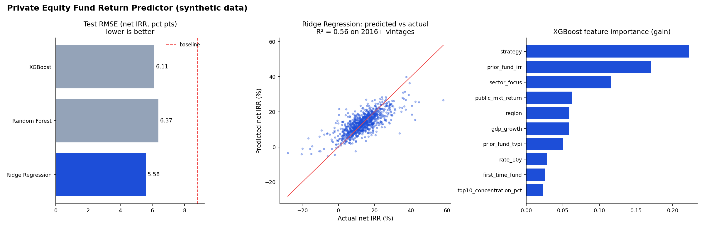

Best model
Ridge
R² 0.56 on held-out vintages
Test error (RMSE)
5.58
IRR points, vs 8.80 baseline
Top-quartile hit rate
58.5%
vs 25.7% by chance
Avg IRR of picks
18.9%
vs 13.4% for all test funds
Model comparison
Trained on 2000–2015 vintages, tested on 2016–2020 (lower error is better).
| Model | CV RMSE | Test RMSE | MAE | R² |
|---|---|---|---|---|
| Baseline (training mean) | — | 8.80 | 6.63 | −0.09 |
| Ridge Regression | 5.77 | 5.58 | 4.00 | 0.56 |
| XGBoost | 6.13 | 6.11 | 4.46 | 0.47 |
| Random Forest | 6.14 | 6.37 | 4.79 | 0.43 |
Results chart

What drives the prediction
Top feature importances from the XGBoost model.
As a screening tool
Of the 253 funds the model ranked in the top quartile of their vintage and strategy, 58.5% really were top quartile, more than double the 25.7% you'd get by chance. Their average net IRR was 18.9%, against 13.4% for all test funds.
Features used
- Fund: strategy, region, sector focus, size, first-time fund
- Track record: prior fund IRR and TVPI
- Terms: management fee, GP commitment
- Portfolio risk: leverage, number of companies, top-10 concentration, IPO exits
- Market: GDP growth, 10-year rate, entry EV/EBITDA, public market return
About the data: real fund-level returns (Preqin, PitchBook, Burgiss, Cambridge Associates) are licensed and can't be published, so the model is trained on a synthetic dataset of 4,000 funds that encodes relationships documented in private equity research: manager persistence, vintage cycles, diseconomies of scale and fee drag. No number here describes a real fund. The code can be retrained on a real export with the same columns.